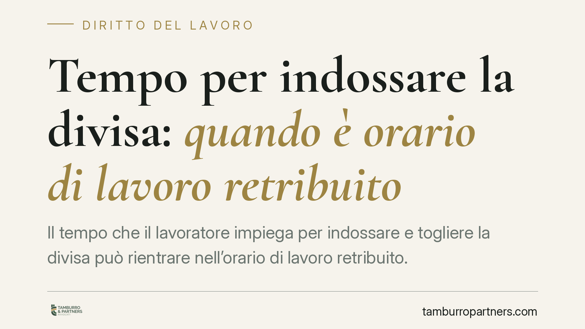

Tempo per indossare la divisa: quando è orario di lavoro retribuito
Il tempo che il lavoratore impiega per indossare e togliere la divisa può rientrare nell'orario di lavoro retribuito. La recente giurisprudenza di legittimità lo riconosce quando la vestizione è imposta, anche implicitamente, dal datore o dalla natura degli indumenti. Ne derivano differenze retributive e obblighi contributivi. Il tema tocca da vicino il settore sanitario e ogni contesto con obblighi igienico-sanitari.

Il fatto
La questione riguarda il cosiddetto *tempo tuta*: i minuti che il personale sanitario dedica a indossare e togliere la divisa a inizio e fine turno. La domanda è se quel tempo debba essere considerato orario di lavoro e, come tale, retribuito.
La recente giurisprudenza di legittimità ha affermato un principio già consolidato: quando la vestizione è eterodiretta, cioè imposta dal datore di lavoro, quel tempo è orario di lavoro. L'imposizione non deve essere per forza esplicita: può discendere dalla natura degli indumenti e dalle esigenze igienico-sanitarie che ne governano l'uso.
Inquadramento normativo
Il riferimento è l'art. 1, comma 2, lett. a) del D.Lgs. 66/2003, che definisce orario di lavoro «qualsiasi periodo in cui il lavoratore sia al lavoro, a disposizione del datore di lavoro e nell'esercizio della sua attività o delle sue funzioni». La norma attua la Direttiva 2003/88/CE in materia di organizzazione dell'orario di lavoro.
Il criterio discretivo è l'eterodirezione. Se il lavoratore può indossare la divisa liberamente, anche prima di recarsi al lavoro, e riporla dove preferisce, il tempo di vestizione resta fuori dall'orario di lavoro. Se invece le modalità sono imposte — luogo, tempi, tipologia di indumenti richiesti da ragioni igieniche o di sicurezza — quel tempo è a disposizione del datore e va computato.
Nel settore sanitario l'eterodirezione tende a configurarsi in concreto: gli indumenti rispondono a esigenze di igiene e prevenzione, non possono essere indossati fuori dalla struttura e vanno vestiti e riposti in luoghi determinati. L'accertamento, però, resta caso per caso.
È utile ricordare che analogo principio vale per la formazione obbligatoria ex art. 37 del D.Lgs. 81/2008: il tempo dedicato alla formazione in materia di salute e sicurezza costituisce orario di lavoro e non può gravare economicamente sul lavoratore.
La portata della decisione
Il principio non trasforma automaticamente ogni vestizione in orario retribuito. La pronuncia non introduce un diritto generalizzato: conferma un metodo. Occorre verificare, in concreto, se ricorra l'eterodirezione. In assenza di vincoli imposti dal datore, la conclusione può essere diversa.
È un punto importante per evitare generalizzazioni indebite. Il discrimine resta la libertà o meno del lavoratore nella gestione della vestizione.
Implicazioni pratiche
Dove la vestizione è eterodiretta, emergono tre ordini di conseguenze.
Differenze retributive. Il tempo tuta non computato genera crediti retributivi in favore del lavoratore. Tali crediti sono soggetti a prescrizione quinquennale ai sensi dell'art. 2948, n. 4, c.c.
Recuperi contributivi. Se il tempo è orario di lavoro, la relativa retribuzione è imponibile ai fini previdenziali. Ne derivano possibili recuperi contributivi da parte dell'INPS, con i profili assicurativi INAIL connessi, secondo i termini di legge.
Profili ispettivi. La mancata contabilizzazione del tempo di vestizione può emergere in sede di verifica ispettiva, con effetti sia retributivi sia contributivi per il datore di lavoro.
Cosa considerare in concreto
- Verificare se le modalità di vestizione siano imposte dal datore o dalla natura degli indumenti, elemento decisivo per l'eterodirezione.
- Ricostruire l'organizzazione effettiva: luogo di vestizione, obblighi igienico-sanitari, divieto di uso della divisa fuori dalla struttura.
- Considerare i limiti temporali: per le differenze retributive rileva la prescrizione quinquennale; per i profili contributivi valgono i termini di legge propri dei recuperi INPS.
- Estendere la valutazione alla formazione obbligatoria sulla sicurezza, anch'essa da computare come orario di lavoro.
- La valutazione dei presupposti dell'eterodirezione richiede un esame in concreto della situazione organizzativa: non esistono automatismi validi per ogni contesto.
La materia è tecnica e l'esito dipende dalla ricostruzione dei fatti. Un'analisi puntuale dell'assetto organizzativo consente di misurare correttamente l'esposizione, sia sul piano retributivo sia su quello contributivo.
Contributo informativo a cura di Tamburro & Partners Avvocati. Non costituisce parere legale.
Ogni storia di lavoro ha i suoi tempi.
Se gestisci HR e vuoi un confronto su contenzioso, ispezioni o licenziamenti, scrivi allo studio. Ti rispondiamo entro un giorno lavorativo.